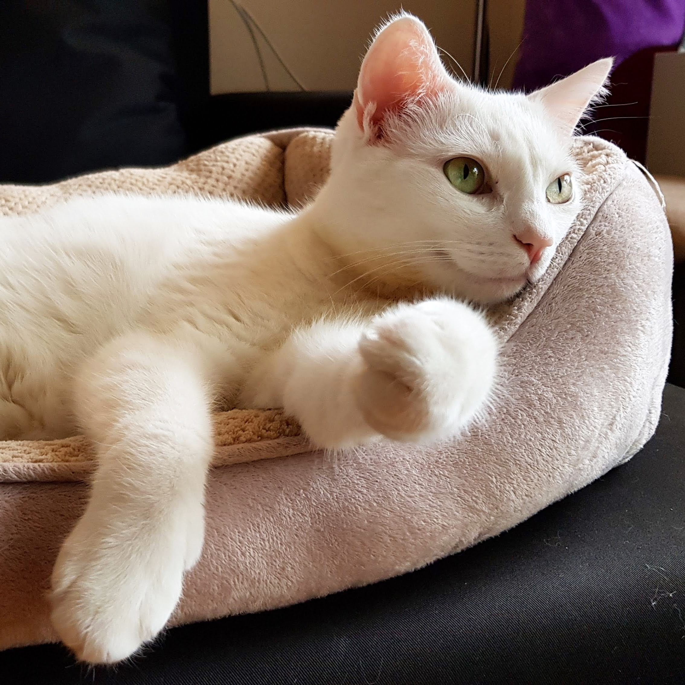

Nessa Nguyen
Full-stack Software Engineer
What I do
Based in New York City, I am currently working as a full-stack software engineer at Better.com, leveraging technology to innovate and streamline the online mortgage process. I have expertise in Javascript/Typescript, NodeJS, React/Angular/Ember, Python, SQL/NoSQL databases, microservice architecture and RESTful APIs. I am passionate about writing DRY code, automated testing, and continuous integration.
I started programming in 2014 after attending General Assembly's Web Development Immersive. It was an unique and engaging learning experience that led me down a fulfilling career path. I love software development because it allows me to communicate via writing and solve problems creatively.
Interests & Causes
I'm interested in constantly evolving my skill set and giving back to the tech community. I have mentored seven software engineering interns from various internship programs (including NYC TTP, WiTNY). One of my early mentees went on to become a valuable software enigneer at Narrativ. I have volunteered as a coding bootcamp instructor for CodeNow.org and as a tutor for software fellows at The Knowledge House.

Issues I care about include conserving the environment, reforming healthcare, advancing women/minorities in leadership and technology, and promoting a healthy, balanced lifestyle.
In my free time, I train in aerial arts and pole dance, listen to EDM, and watch TV shows on Hulu. I love traveling and exploring new places. I have worked remotely for 2-4 weeks in Berlin/Lisbon/Playa del Carmen (2015/2019/2020 Hacker Paradise), Barcelona (2017 Be Unsettled), and London (2018). Check out my New Zealand photo journal.
I currently live in Park Slope, Brooklyn with my partner, our daughter Jade (born Oct 2021) and our cat Jane Snow (adopted May 2020).
Skills
BackendNodeJS / Typescript Python / Flask PostgreSQL / ElasticSearch Ruby / Rails |
FrontendReact
AngularJS
EmberJS SASS |
ToolsDocker / bash / Make AWS RDS / SQS / Cloudwatch Jenkins / BuildKite DataDog / LogDNA |
Work Experience
-
Senior Software Engineer, Better.com | November 2019 - April 2022
- Designed, built and maintained the Tickets microservice for tracking and resolving customer issues, ~500 daily users (NodeJS, OpenAPI, PostgreSQL, TypeORM)
- Monitored service error rate and performance, triaged/debugged production issues and coordinated incident responses, e.g. rollback, hot fix (Datadog, PagerDuty, BuildKite)
- Implemented and maintained features for the Tickets UIs (React, legacy EmberJS)
- Tackled technical debt and improved productivity through Typescript refactoring, improved speed of staff member endpoints by reducing response size 70%
- Promoted a high level of code standards through writing unit/integration tests, reviewing PRs, improving linting tools (e.g. ESLint Github action), and writing technical documentation
-
Lead Software Engineer, Narrativ | April 2018 - October 2019
- Restructured event schemas and queries for Publisher Dashboard to provide real-time stats (for editorials/affiliate links, attributed revenue) and actionable insights to publisher clients (Python/Flask, Snowflake, PostgreSQL)
- Architected and implemented Cart Explorer MVP, which allowed publishers to make informed editorial decisions by searching product, retailer and revenue data searchable (Python/Flask, ElasticSearch)
- Organized workflow and provided guidance to four ICs, developing new features while paring down tech debt
- Spearheaded the redesign/migration of the admin dashboard from AngularJS to React
-
Software Engineer, Narrativ | August 2016 - April 2018
- Updated stats aggregation/calculation in admin dashboard endpoints (Python, Flask)
- Built Javascript tags and widgets that run real-time auctions and collect user stats on publishers’ and merchants’ websites (Javascript ES6, NodeJS)
- Raised the bar for code quality through PR reviews, refactors, automated tests, and documentation
-
Software Engineer, Sportsrocket | June 2015 - August 2016
- Built and maintained the service-oriented Sportsrocket API and its queue-based processes (Ruby/Rails, SNS/SQS)
- Worked on several Rails microservices for user authentication, payments and geogating
- Implemented analytics pipeline which processed 800k+ daily events (AWS Lambda/Kinesis, Redshift)
- Added features for the admin video CMS, e.g. download/sync videos to YouTube, Twitter (AngularJS)
-
Junior Software Engineer, Waywire | Sept 2014 - May 2015
-
Built features for Waywire.com video discovery homepage and its admin video CMS (Javascript, Angular)
-
Email Marketing Associate, Vendome Group | 2013 - 2014
-
Created and executed HTML email campaigns, managed 200k-contact audience (Dreamweaver, Silverpop)
Education
- General Assembly, 2014 / Web Development Immersive
- California Lutheran University 2008 - 2012 / B.A. Marketing Communications
Volunteer
- The Knowledge House, 2020 / Review bootcamp curriculum and tutor students
- iMentor, 2018-2019 / Mentor to a high schooler who will become a first-generation college student
- Code Now workshop, 2017-2018 / Volunteer instructor for full-stack bootcamp serving underrepresented high school students